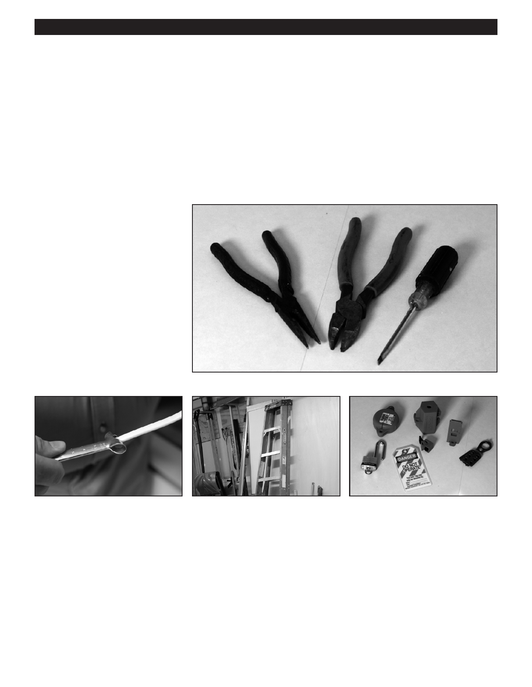

PA RT I C I PA N T R E S O U R C E G U I D E
Key Tools for Electrical Repairs
You’ll need several tools to test and repair the electrical system in your apartment
building.
Even though these tools are not expensive, they’re an excellent investment. Not only
will they help you make repairs, but they’ll also help keep you safe as you do your
electrical work.
Repair Tools
An insulated screwdriver has
rubber-coated handles that reduce
the risk of shock if the screwdriver
should accidentally touch live wires.
An insulated needlenose pliers
bends and shapes wires to connect
them to screw terminals. Some may
even have cutting jaws to snip wires.
An insulated combination tool is
essential for most wiring projects.
This tool:
• Cuts cables and wires
• Measures wire gauges
• Strips wires
A cable ripper fits over NM (non-
A fiberglass ladder is the safest
Lockout/tagout kits should be
metallic) cable. A small cutting point
choice for electrical repairs, because
used to identify that an electrical
rips the outer plastic vinyl sheath
it will not conduct electricity. (Never
power source, such as a circuit
or NM cable so the sheath can be
use aluminum ladders when working
breaker, is shut off and secured.
removed without damaging wires.
with electricity.)
17